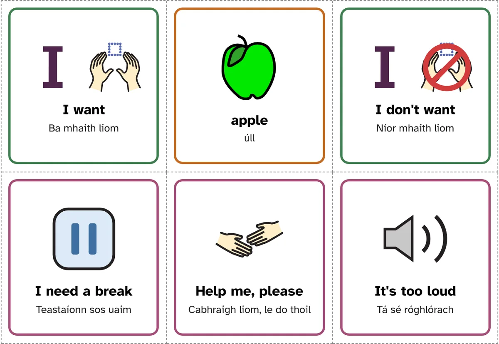

Free printable talk cards
Picture cards that help a child say what they want or need. Print them in English, in Irish, or both, at the size that suits your child. Free, with no sign-up.

What you can print
- Starter cards: I want, I don't want, I need, I love, I like, I don't like, I feel and I see. Put one next to a picture card to make a short sentence, like "I want" and "apple".
- Whole-sentence cards: I need the toilet, I need a break, Help me please, I want a drink, I'm hungry, I'm tired, I feel sad, I feel happy, I want a hug, I love you, It's too loud, It hurts, I want to go outside, More please, All done, and Stop.
- Picture cards from every page of the Talk board: food, drinks, play, places, calm things, chat, feelings, body, describing words, people, and 36 core words. Over 150 pictures in all.
- Your own sentence cards: up to 24, with your own words and picture. For example, "I want to go to Granny's" with a photo of her house.
Sizes and styles
- Five sizes: Full page (1 card on a sheet), Half page (2), Large (6), Medium (12) and Keyring (20). Every size fits A4 and US Letter paper.
- Words in English, in Irish (Gaeilge), or both on the same card.
- Colour edges in the usual communication-board colours: green for action words, orange for things and places, yellow for people, blue for feelings and describing words, and pink for whole sentences. Or plain black and white, to save ink.
- Dashed lines show where to cut. To get a file instead of paper, choose "Save as PDF" in the print window.
How to make them
- Open Calm Match. You don't need an account.
- Open the Grown-ups area with the Grown-ups button at the top of the screen.
- Go to Make, then Talk cards.
- Choose the cards, the size, the edges and the language. A preview shows the first few cards.
- Press Print cards, then cut along the dashed lines. Laminating them makes them last.
Ideas for using them
- Keep "I need a break" and "It's too loud" where your child can always reach them.
- Make a keyring set to take out of the house.
- Put the cards on the fridge or in a folder, next to the things they show.
- The cards use the same pictures as the Talk board on the screen, so a child sees the same picture on paper and on the tablet.
In Irish
Every card has Irish words. Irish sometimes puts the word in the middle of the sentence, so a few starter cards show where it goes: "Teastaíonn … uaim" means "I need …". The Irish words are still being checked by a fluent speaker, so a few may change. Spotted something to improve? Email hello@calmmatch.com.
Private
The cards are made on your device and printed by your browser. Nothing you choose or type is sent to us, and your own sentence cards stay on your device. Read the privacy policy.
Good to know
Talk cards and the Talk board are a simple way to practise asking and telling. They don't replace a full communication aid, or advice from a speech and language therapist.
Most pictures are Mulberry Symbols by Steve Lee, shared under the Creative Commons Attribution-ShareAlike 4.0 licence. A few were drawn for Calm Match. See the credits.
More from Calm Match
- Free visual schedules with Now and Next, timers and printable schedule cards.
- For schools and autism classes: one shared tablet for a small class.